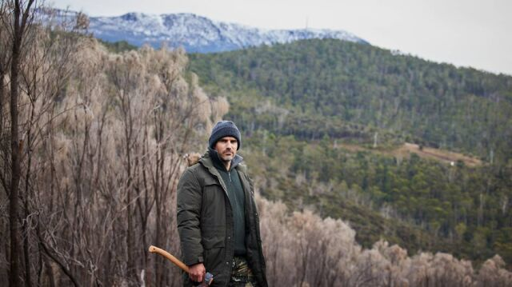
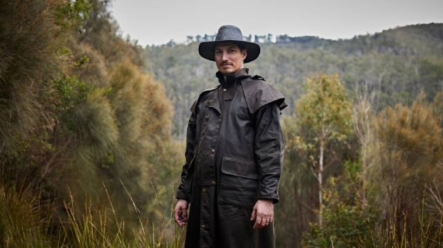
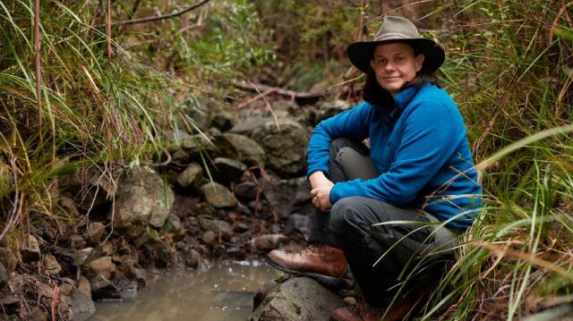
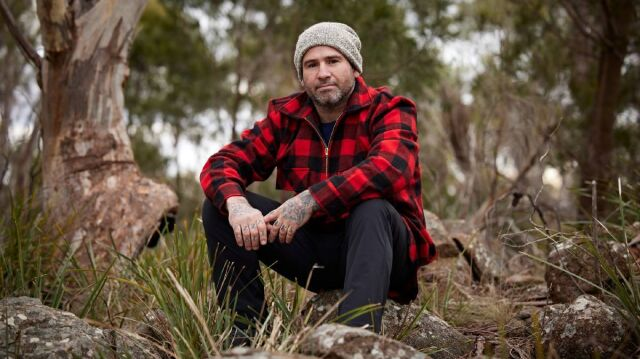
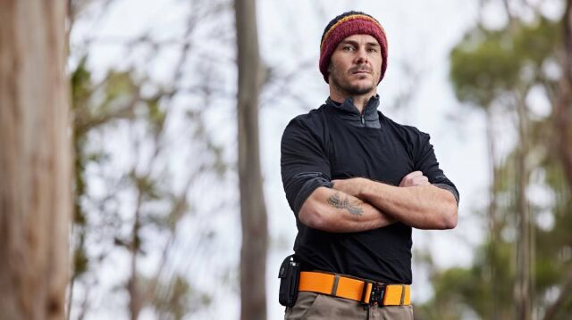
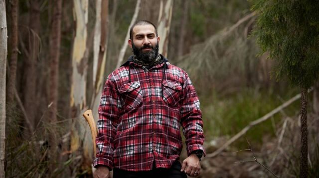
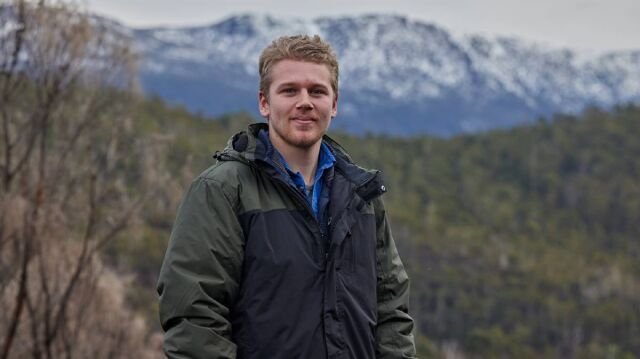
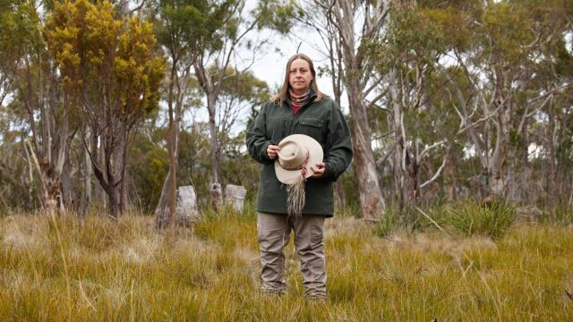
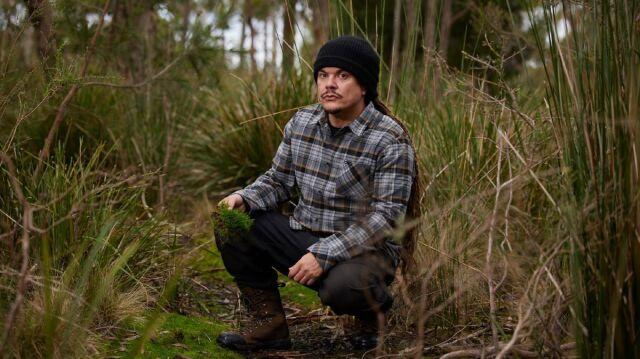

1stWinner
1stWinnerGina Chick
Rewilding Facilitator
- Lasted
- 67 days
- Age
- 52
- From
- New South Wales
Alone Australia
lutruwita / Tasmania, Australia · Premiered 29 Mar 2023
Days each survivalist lasted, in finishing order, and why they tapped out. Every season page uses the same 0–100 day scale so seasons can be compared at a glance.









Who they are, where they're from and the ten items they carried in.
1stWinnerRewilding Facilitator
Solo Adventurist
Vet And Bush Regenerator
Wildlife Biologist
Army Veteran
Wildlife And Environmental Officer
Hunting Guide
Farmhand And Engineering Student
School Teacher
Planning And Environmental Manager
How many survivalists chose each item (items grouped into simplified categories).
Air dates, survivalists remaining at the start of each episode, viewers and IMDb rating.
| Ep | Title & opening quote | Aired | Remaining | Viewers (M) | IMDb |
|---|---|---|---|---|---|
| 1 | Episode 1“Travellers, there is no path. Paths are made by walking.” — Antonio Machado | 29 Mar 2023 | 10 | 0.76 | |
| 2 | Episode 2“There's no harm in hoping for the best as long as you're perpared for the worst.” — Stephen King | 29 Mar 2023 | 10 | 0.76 | |
| 3 | Episode 3“Hunger is the handmaid of genius.” — Mark Twain | 5 Apr 2023 | 7 | — | |
| 4 | Episode 4“The world breaks everyone, and afterward, some are strong at the broken places.” — Ernest Hemingway | 12 Apr 2023 | 6 | — | |
| 5 | Episode 5“He who has a why to live can bear almost any how” — Fredirich Nietzsche | 19 Apr 2023 | 6 | — | |
| 6 | Episode 6“The important thing in life is not the triumph but the struggle” — Pierre de Coubertin | 26 Apr 2023 | 5 | — | |
| 7 | Episode 7“There's something to be said for hunger: at least it lets you know you're still alive” — Margaret Atwood | 3 May 2023 | 5 | — | |
| 8 | Episode 8“Solitude, Isolation, are painful things, and beyond human endurance.” — Jules Verne | 10 May 2023 | 4 | — | |
| 9 | Episode 9“Our greatest weakness lies in giving up. The most certain way to succeed is always to try just one more time.” — Thomas Edison | 17 May 2023 | 3 | — | |
| 10 | Episode 10“By endurance we conquer.” — Earnest Shackleton | 24 May 2023 | 3 | — | |
| 11 | Episode 11“By endurance we conquer.” — Earnest Shackleton | 24 May 2023 | 2 | — |